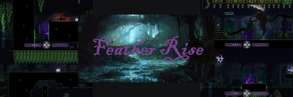

Descripción
Feather Rise es un videojuego 2D en el que controlaremos a un protagonista que tratará de avanzar por un bosque lleno de obstáculos y puzzles persiguiendo una pluma para poder alcanzar al amigo del protagonista que se encuentra en peligro.
Para completar los niveles, será necesario poner en práctica mecánicas para evitar obstáculos, como el salto, dash, lanzamiento de plumas para escalar o combate con enemigos.
Desarrolladores
- Desarrollador 1: Marcos Pérez Martínez
- Desarrollador 2: Javier Tirado Rios
- Desarrollador 3: Adrián Castellanos Ormeño
- Desarrollador 4: Miguel Ángel López Muñoz
- Desarrollador 5: Marcos Pantoja Rafael de la Cruz